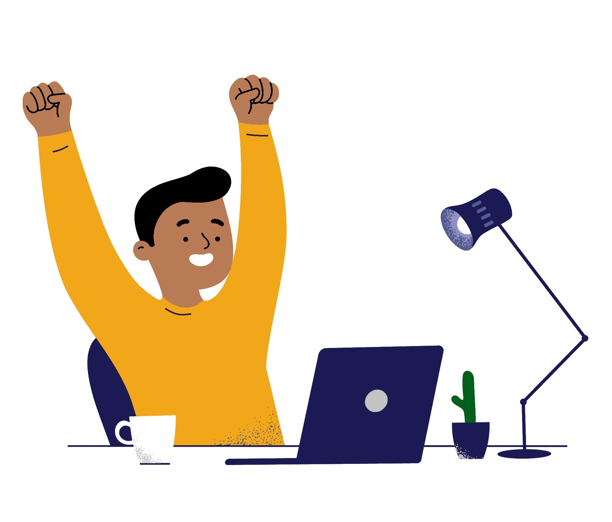

Pedido foi enviado com sucesso!

Em breve você recebera uma mensagem no seu e-mail, com as instruções para prosseguir-mos com a criação do seu perfil de links.
Em breve você recebera uma mensagem no seu e-mail, com as instruções para prosseguir-mos com a criação do seu perfil de links.